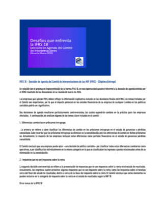
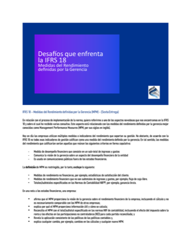

IFRS 18 – Decisión de Agenda del Comité de Interpretaciones
Abrir PDF
Aquí encontrará material técnico y de divulgación desarrollado por IFIS en auditoría, IFRS, información financiera y aseguramiento. Seleccione una publicación para abrir el documento en PDF.


Haga clic en una publicación para abrir el documento en PDF.